▲ 석모대교와 주변 바다를 내려다본 모습. 촬영 시기는 자료에 없다 ⓒ 한국관광공사 · 공공누리 제1유형
"석모도 온천에서 지는 해를 보고 싶은데, 몇 시까지 들어가야 하고 보문사까지 다 돌 수 있을까?" 겨울이 가까워지면 이런 질문이 늘어난다. 이 글은 2026년 10월 20일 기준으로 강화군 문화관광 안내, 한국관광공사, 한국천문연구원(KASI) 자료를 맞춰 석모대교 드라이브부터 보문사, 미네랄온천, 낙조 시각까지 늦가을~겨울 하루 코스를 정리했다. 강화군 석모도 미네랄 스파 안내 바로가기
핵심은 해가 짧다는 점이다. KASI의 강화도 자료로 12월 일몰은 17시 15분 안팎이라, 보문사와 온천을 하루에 묶으려면 순서와 시간 배분이 결과를 좌우한다. 전등사·마니산까지 포함한 강화 전체 코스는 강화도 전등사·보문사·마니산 가이드에 있고, 이 글은 석모도 한 섬에 집중한다.
💡 먼저 결론
강화군 안내 기준으로 석모도 미네랄 스파는 입장료 대인 9,000원, 매주 화요일 휴관이고 보문사는 어른 2,000원·09:00~18:00이다. 강화도 기준 12월 일몰은 17시 15분 안팎이다. 온천 운영시간은 동절기(11~3월) 07:00~20:00(입장마감 18:00), 하절기(4~10월) 07:00~21:00(입장마감 19:00)이고 주차는 무료다. 보문사 주차는 소형 2,000원이며, 석모대교 통행료는 공식 자료에서 확인하지 못했다.
1. 석모대교 — 강화 본섬에서 석모도까지
석모대교는 강화 본섬과 삼산면 석모도를 잇는 연륙교로, 강화군 군정뉴스에 따르면 길이 1.54km, 폭 12m의 왕복 2차선이다. 2017년 6월 27일 개통식을 거쳐 6월 28일 0시부터 전면 통행이 시작됐고, 총사업비는 854억 원이었다. 강화군 석모대교 개통 안내 바로가기
강화군 석모도 안내 페이지는 자가용 경로를 김포대로, 강화 중앙로, 석모대교, 석모도 순으로 소개하고, 보문사는 석모대교를 건너 차로 약 15분(강화군 보문사 안내)이라고 적는다. 대중교통은 강화버스터미널에서 31A·31B·35A·35B·38A·38B번이 안내돼 있다. 통행료 여부는 개통 보도자료와 위 안내 페이지 어디에도 적혀 있지 않아 이 글에서는 단정하지 않는다.
| 항목 | 확인한 내용 | 근거 |
|---|---|---|
| 규모 | 길이 1.54km, 폭 12m, 왕복 2차선 | 강화군 군정뉴스(2017-06-20) |
| 개통 | 2017년 6월 28일 0시 전면 통행 | 강화군 군정뉴스·석모도 안내 |
| 자가용 경로 | 김포대로 → 강화 중앙로 → 석모대교 | 강화군 석모도 안내 |
| 버스 | 강화버스터미널 31A·31B·35A·35B·38A·38B | 강화군 석모도 안내(노선·배차는 확인하지 못함) |
| 통행료 | 공식 자료에서 확인하지 못함 | — |
▲ 석모대교와 주변 바다를 내려다본 모습. 한국관광공사 석모도 사진이며 촬영 시기는 자료에 없다. ⓒ 한국관광공사 · 공공누리 제1유형
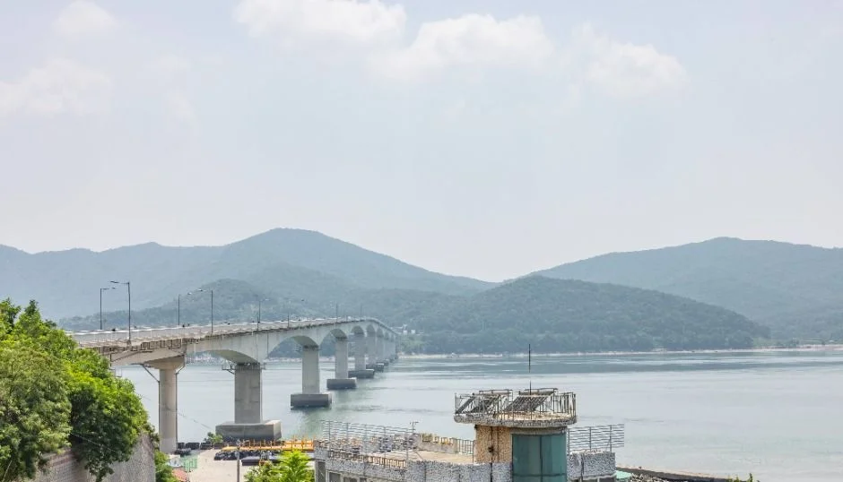
▲ 바다 건너로 이어진 연륙교와 산세. 촬영 시기는 자료에 없고 흐린 하늘이 담겼다. ⓒ 한국관광공사 · 공공누리 제1유형
2. 보문사 — 입장료·운영시간과 눈썹바위
보문사는 석모도 낙가산 자락의 사찰로, 강화군은 대한민국 3대 관음성지로 소개한다. 강화군 문화관광 페이지 기준 입장료는 어른 2,000원, 중고생 1,500원, 초등학생 1,000원이고 운영시간은 09:00~18:00, 관람 소요시간은 약 60분이다. 매점과 화장실이 있고 문의는 032-933-8271이다. 강화군 보문사 안내 바로가기
강화군 입장료·주차료 안내표에는 보문사 주차료가 소형 2,000원, 대형 5,000원으로 나와 있다. 주차 가능 대수는 확인하지 못했다. 마애불이 새겨진 눈썹바위는 경내 위쪽 절벽에 있고, 강화군 석모도 안내는 이곳에서 석양을 볼 수 있다고 소개한다. 오르는 길의 계단 수와 소요 시간은 공식 수치를 찾지 못했다. 같은 사찰의 역사와 마애관음보살좌상 설명은 앞선 강화 기사에 있으니 여기서는 방문 계획에 필요한 정보만 다룬다.
| 항목 | 내용 |
|---|---|
| 입장료 | 어른 2,000원 / 중고생 1,500원 / 초등학생 1,000원 |
| 운영시간 | 09:00~18:00 (관람 약 60분 소요) |
| 편의시설 | 매점, 화장실 |
| 문의 | 032-933-8271 |
| 주차 | 소형 2,000원 / 대형 5,000원 (강화군 입장료·주차료 안내표) |
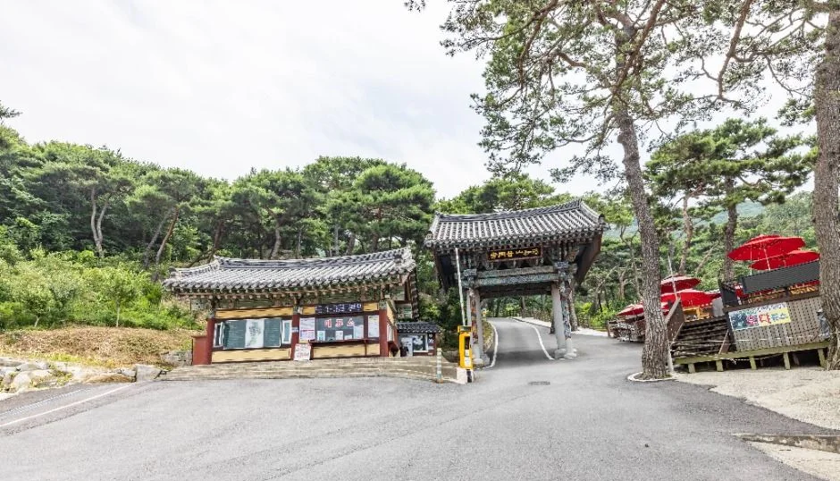
▲ 보문사 입구 일대. 촬영 시기는 자료에 없다. ⓒ 한국관광공사 · 공공누리 제1유형
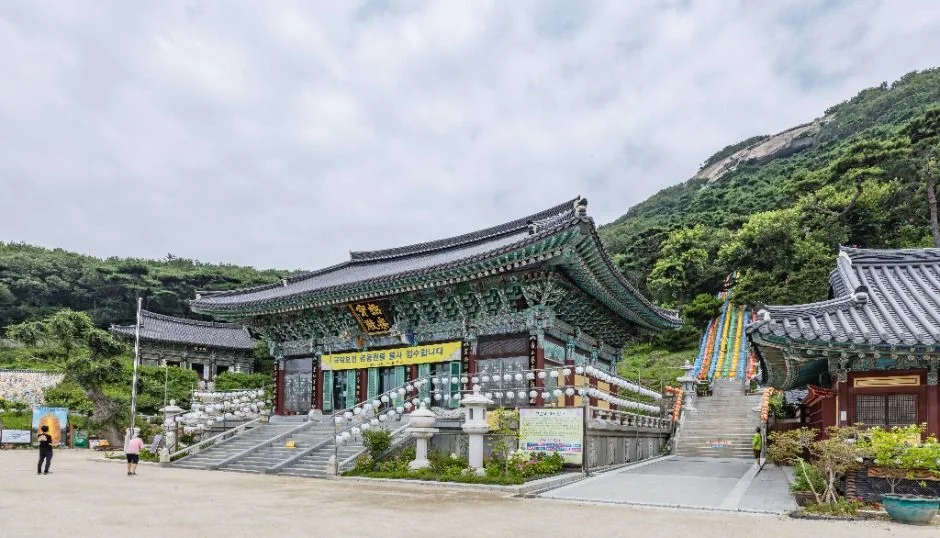
▲ 보문사 경내 전각과 뒤편 산세. 푸른 녹음으로 보아 늦가을·겨울이 아닌 계절의 사진이다. ⓒ 한국관광공사 · 공공누리 제1유형
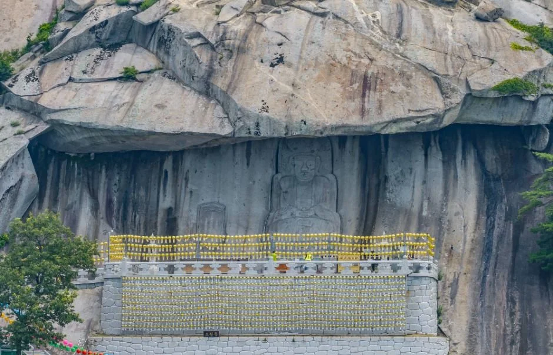
▲ 눈썹바위 절벽 아래 석축 일대. 촬영 시기는 자료에 없다. ⓒ 한국관광공사 · 공공누리 제1유형
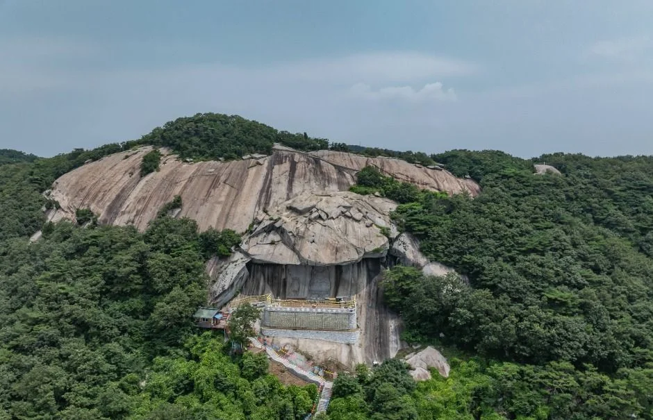
▲ 보문사 뒤편 바위 절벽을 위에서 본 모습. 촬영 시기는 자료에 없다. ⓒ 한국관광공사 · 공공누리 제1유형
3. 석모도 미네랄 스파 — 공식 정보와 엇갈리는 안내
강화군 문화관광 페이지의 석모도 미네랄 스파 안내는 입장료 대인 9,000원, 소인(4~7세) 6,000원, 단체(20명 이상) 8,000원이다. 65세 이상·참전유공자·장애인 1~3급·다자녀가구는 6,000원이고, 강화군민은 평일 4,000원, 주말·공휴일 6,000원이다. 실내탕과 바닷가에 인접한 노천탕 15개로 구성된다. 강화군 석모도 미네랄 스파 공식 안내 바로가기
강화군 문화관광 안내 페이지에는 평일·주말·공휴일 모두 07시~21시, 휴관일은 매주 화요일로만 적혀 있다. 반면 강화군 화개정원·석모도 수목원 누리집의 온천 안내에는 계절별로 나뉘어, 동절기(11월~익년 3월)는 07:00~20:00(입장마감 18:00), 하절기(4월~10월)는 07:00~21:00(입장마감 19:00)이며 휴관일은 매주 화요일, 주차비는 무료로 적혀 있다. 한국관광공사 여행기사(2019년 12월 갱신)와 2017년 강화군 보도자료에는 첫째·셋째 화요일만 쉰다고 되어 있으나, 현행 군 페이지들은 모두 매주 화요일이다. 겨울 낙조 일정은 계절별 입장마감(18시)을 기준으로 잡고, 방문 전 스파(032-930-7053)에 한 번 더 확인하는 것이 안전하다.
| 항목 | 확인한 내용 | 비고 |
|---|---|---|
| 입장료 | 대인 9,000원 / 소인(4~7세) 6,000원 / 단체(20인 이상) 8,000원 | 강화군 안내 |
| 할인 | 65세 이상·참전유공자·장애인 1~3급·다자녀 6,000원 | 강화군민 평일 4,000원, 주말·공휴일 6,000원 |
| 운영시간 | 동절기(11~3월) 07:00~20:00, 하절기(4~10월) 07:00~21:00 | 입장마감 동절기 18:00 / 하절기 19:00 (강화군 석모도 수목원 누리집). 문화관광 페이지는 07~21시로만 표기 |
| 휴관일 | 매주 화요일 | 일부 과거 자료는 첫째·셋째 화요일로 표기 |
| 시설 | 실내탕, 노천탕 15개 | 노천탕은 바닷가 인접 |
| 문의 | 스파 032-930-7053 / 관광콘텐츠팀 032-930-3124 | 강화군 안내 |
| 주차·교통 | 주차비 무료. 승용차는 강화읍에서 외포리 방향, 석모대교를 건너 전득이고개 | 강화군 석모도 수목원 누리집 |
✅ 온천 일정 잡기 전 확인
1) 화요일은 휴관이니 화요일 방문은 피하자 2) 겨울(11~3월)에는 입장이 18시에 마감되니 그 전에 들어가자 3) 주말 대기는 2019년 갱신된 한국관광공사 여행기사가 평균 1시간 안팎이라고 소개한 바 있어, 현재 상황은 확인하지 못했다.
4. 낙조 시각 — KASI 강화도 자료로 보는 11~12월
한국천문연구원 월별 해·달 출몰시각 자료에서 지역 '강화도'를 조회한 값이다. 석모도 지점이 따로 없어 강화도 값을 쓰며, 석모도와는 몇 분 차이가 날 수 있다. 해가 지는 모습을 보려면 일몰 시각보다 여유 있게 자리를 잡는 편이 안전하다. 한국천문연구원 출몰시각 바로가기
| 날짜 | 일출 | 일몰 |
|---|---|---|
| 10월 20일 | 06:47 | 17:51 |
| 11월 1일 | 06:59 | 17:36 |
| 11월 15일 | 07:14 | 17:23 |
| 11월 28일 | 07:27 | 17:16 |
| 12월 10일 | 07:38 | 17:15 |
| 12월 20일 | 07:45 | 17:18 |
| 12월 28일 | 07:48 | 17:23 |
12월 초중순에는 일몰이 17시 15분 안팎까지 앞당겨진다. 2027년 이후 값은 조회하지 못해 적지 않는다. 보문사 운영 종료(18:00)는 일몰 뒤이고, 겨울 온천 입장마감도 18:00이라 일몰 전에 입장하면 노천탕에서 낙조를 볼 수 있다. 다만 보문사를 오래 보면 입장 시각이 빠듯해지니 순서를 정해야 한다.
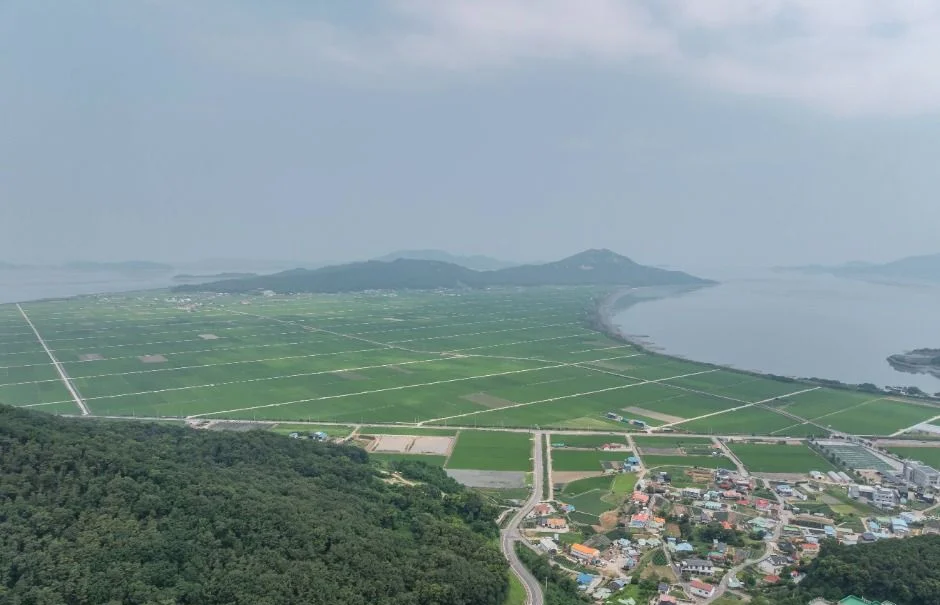
▲ 석모도 일대 들판과 바다를 내려다본 모습. 촬영 시기는 자료에 없다. ⓒ 한국관광공사 · 공공누리 제1유형
석모도 미네랄 스파 내부와 노천탕 사진, 겨울 낙조 사진은 공공누리·한국관광공사·Wikimedia Commons에서 쓸 수 있는 것을 찾지 못해 싣지 못했다. 대신 같은 섬의 인근 해변 사진을 아래에 붙인다.
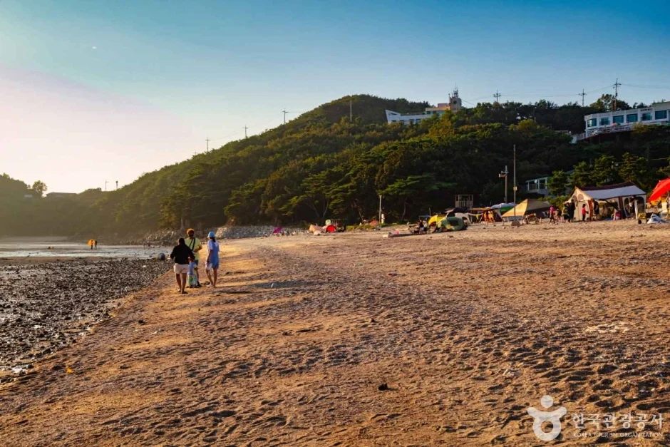
▲ 인근 민머루해변. 석모도 안의 다른 해변이며 사진 속 해가 낮게 비치는 모습이다. 촬영 시기는 자료에 없다. ⓒ 한국관광공사 · 공공누리 제3유형(변경금지)
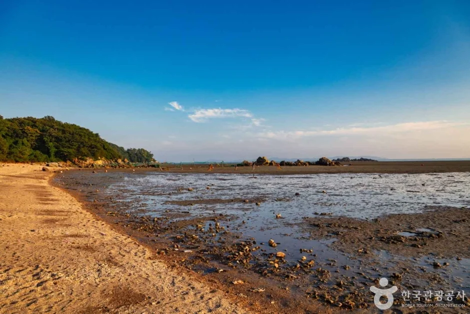
▲ 인근 민머루해변의 갯벌과 물웅덩이. 촬영 시기는 자료에 없다. ⓒ 한국관광공사 · 공공누리 제3유형(변경금지)
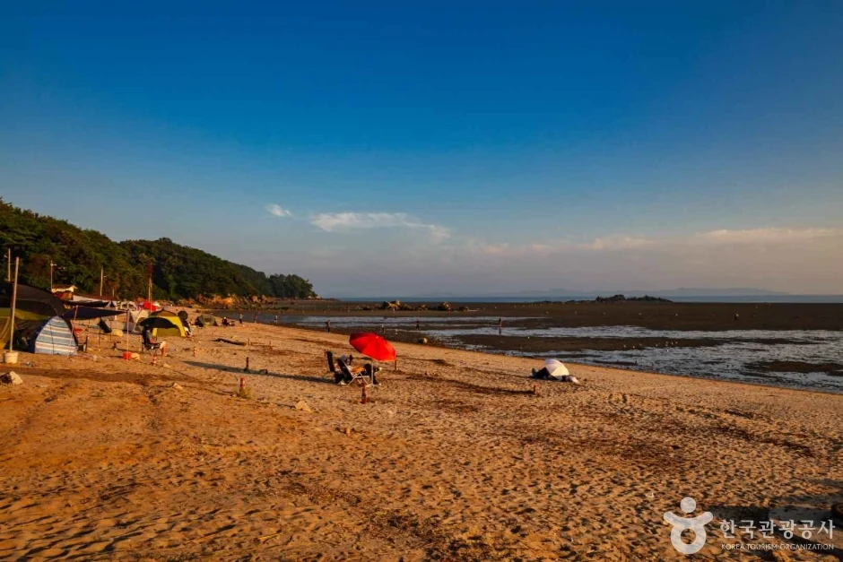
▲ 인근 민머루해변. 하늘이 짙푸르게 담긴 사진이며 촬영 시기는 자료에 없다. ⓒ 한국관광공사 · 공공누리 제3유형(변경금지)
5. 겨울 방문 주의점
일몰이 빠른 만큼 낙조 이후 귀갓길은 이미 어둡다. 섬 안 도로와 산자락 사찰 진입로는 결빙 구간이 생길 수 있어, 서리나 눈이 예보된 날은 운행 방식부터 점검하자. 노면 결빙 대처는 블랙아이스 운전 가이드에 정리했다. 구체적인 강화 도로 통제 기준은 공식 자료에서 확인하지 못했다.
한국관광공사 여행기사(2019년 12월 갱신)는 온천에서 비누·샴푸 사용이 제한된다고 소개했지만 오래된 자료이므로 현장 안내를 따르자. 온천 후에는 바깥 기온이 급격히 내려가므로 차량 히터를 미리 켜 두는 정도의 준비를 권한다.
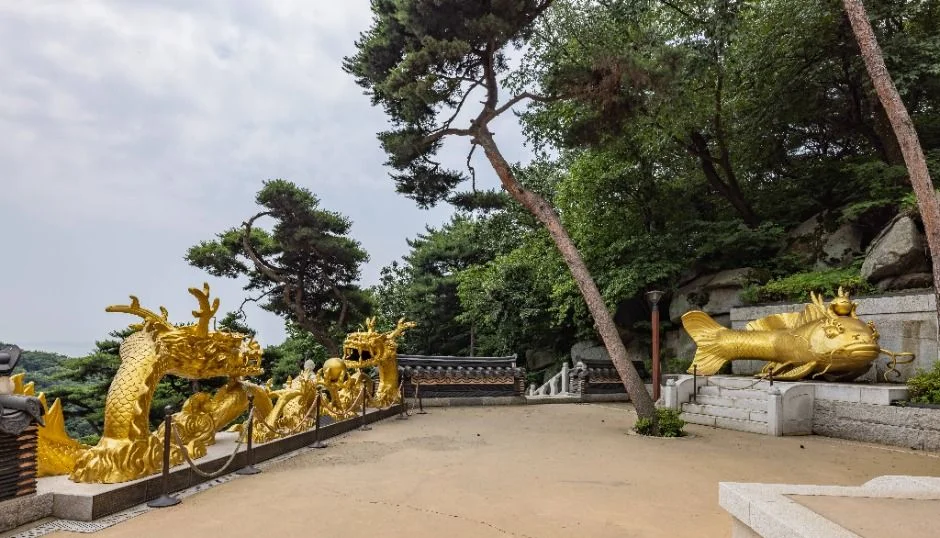
▲ 보문사 경내에 놓인 금빛 용 조형물. 촬영 시기는 자료에 없다. ⓒ 한국관광공사 · 공공누리 제1유형
6. 하루 코스 짜기 — 보문사 먼저, 온천은 해 지기 전
아래는 공식 운영시간과 KASI 일몰을 맞춘 예시다. 이동 시간은 공식 수치가 보문사 15분(석모대교 건넌 후) 외에는 없어 적지 않았고, 온천은 겨울 입장마감 18:00 기준이며, 방문 전 전화로 다시 확인하자.
| 순서 | 할 일 | 체크 |
|---|---|---|
| 오전~낮 | 석모대교 건너기, 보문사 관람(약 60분) | 보문사 09:00~18:00, 입장 2,000원 |
| 오후 초반 | 눈썹바위 쪽 석양 방향 확인 | 오르는 시간은 공식 수치 없음 |
| 오후 | 미네랄 스파 입장(화요일 휴관) | 겨울 입장마감 18:00 |
| 17시 전후 | 노천탕·해안에서 낙조 | 12월 10일 일몰 17:15 |
| 일몰 후 | 귀가 | 어두운 길·결빙 주의 |
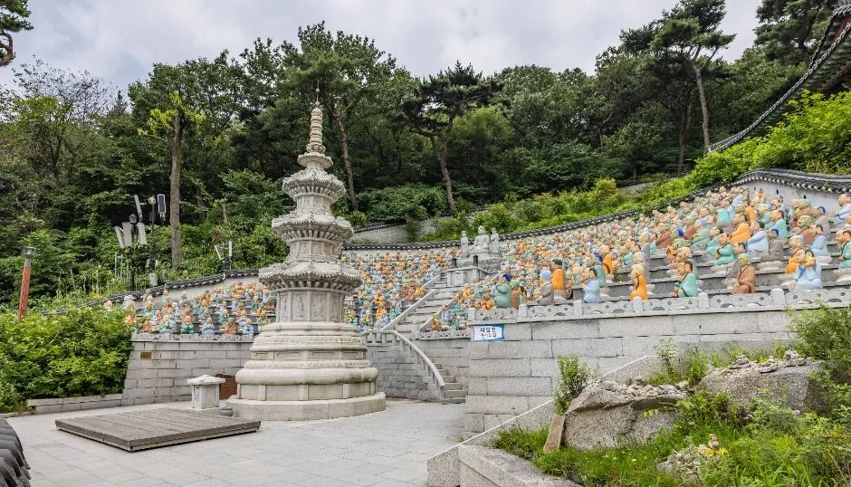
▲ 보문사 석탑과 나한상 석축. 촬영 시기는 자료에 없다. ⓒ 한국관광공사 · 공공누리 제1유형
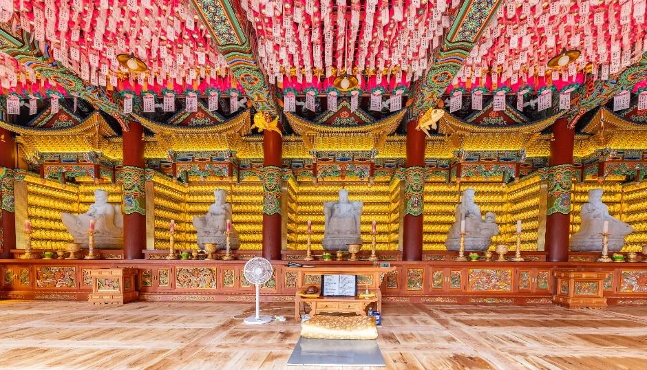
▲ 보문사 전각 내부의 연등 장식. 촬영 시기는 자료에 없다. ⓒ 한국관광공사 · 공공누리 제1유형
7. 더 걷고 싶다면 — 강화나들길 11코스(석모도 바람길)
강화군 석모도 안내는 석모도 바람길(보문사 가는 길)을 16km, 약 5시간으로 소개한다. 한국관광공사 TourAPI에는 '[강화나들길] 11코스 (석모도바람길)'이 등록돼 있다. 겨울 낮이 짧으니 전 구간 대신 일부만 걸을지 정하고, 일몰 시각 전에 차로 돌아올 수 있게 계획하자. 강화군 석모도 안내 바로가기
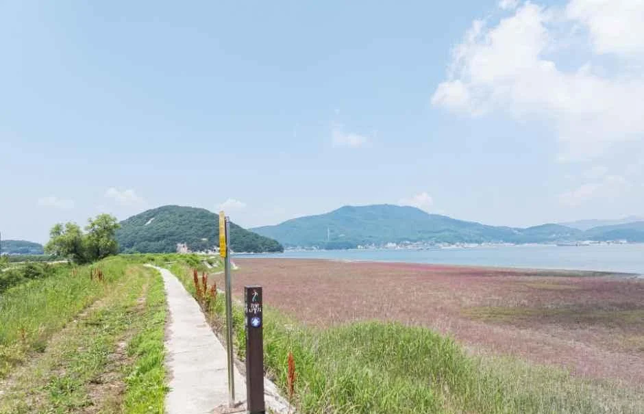
▲ 강화나들길 11코스 산책로. 갯벌 옆 풀밭 구간이며 촬영 시기는 자료에 없다. ⓒ 한국관광공사 · 공공누리 제1유형
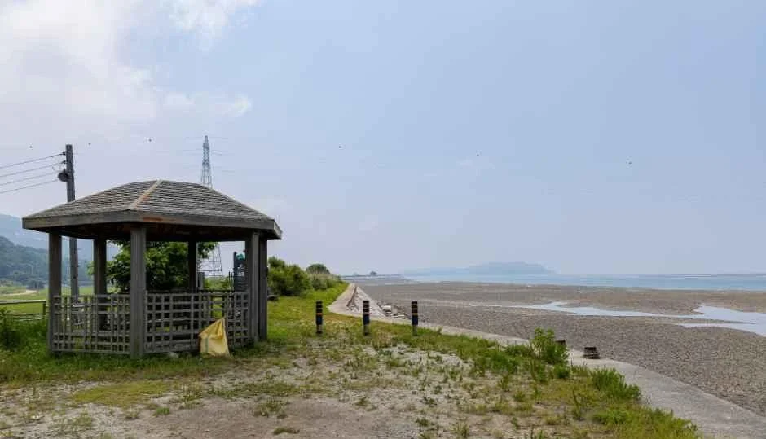
▲ 11코스 해안가 정자. 촬영 시기는 자료에 없다. ⓒ 한국관광공사 · 공공누리 제1유형
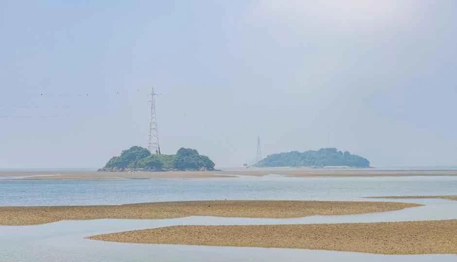
▲ 갯벌 너머로 작은 섬이 보이는 해안. 촬영 시기는 자료에 없다. ⓒ 한국관광공사 · 공공누리 제1유형
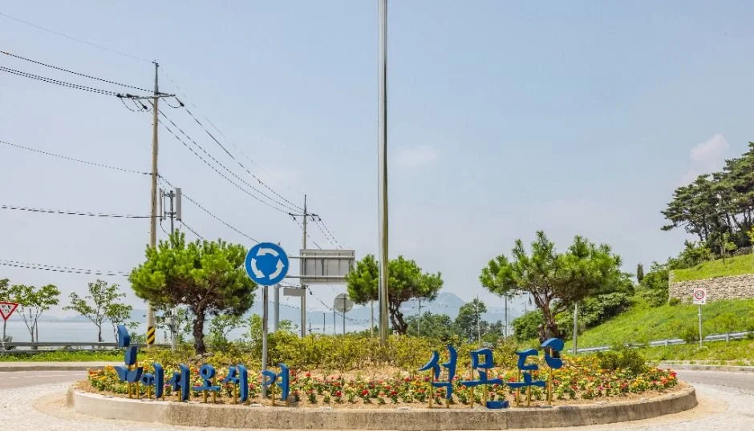
▲ 석모도 글자가 보이는 로터리 조경. 촬영 시기는 자료에 없다. ⓒ 한국관광공사 · 공공누리 제1유형
▲ 인근 석모도 칠면초 군락지 일대의 나무 모양 조형물. 촬영 시기는 자료에 없다. ⓒ 한국관광공사 · 공공누리 제1유형
▲ 인근 석모도 칠면초 군락지. 붉게 물든 군락이 보이며 촬영 시기는 자료에 없다. ⓒ 한국관광공사 · 공공누리 제1유형
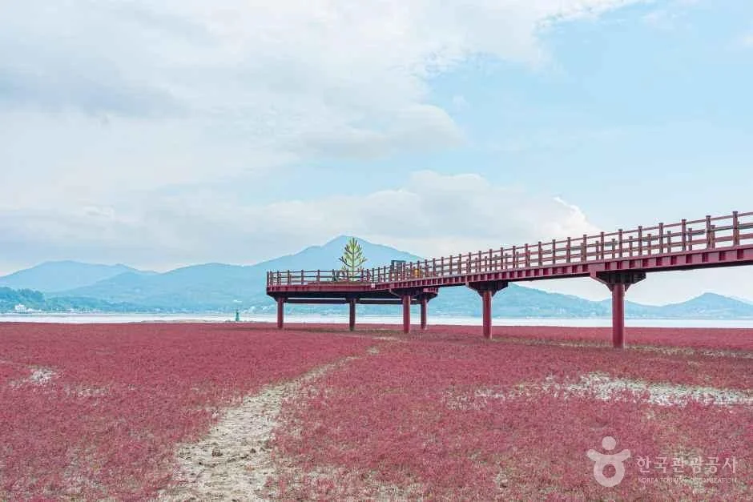
▲ 인근 석모도 칠면초 군락지의 데크길. 촬영 시기는 자료에 없다. ⓒ 한국관광공사 · 공공누리 제1유형
해안 노을을 더 보고 싶다면 영종도 겨울 일몰 해안 드라이브와 강화 북서쪽 섬 교동도 대룡시장 기사를 이어 보자.
✅ 출발 전 체크
1) 온천 9,000원, 화요일 휴관, 운영 동절기 07~20시·하절기 07~21시(입장마감 각 18시·19시), 주차 무료 2) 보문사 2,000원·09:00~18:00 3) 12월 일몰 17시 15분 안팎 4) 보문사 주차 소형 2,000원, 석모대교 통행료는 공식 확인 못함 5) 사진은 대부분 녹음이 짙은 계절 모습이고 일부 인근 해변·군락지 사진도 촬영 시기를 알 수 없어 겨울 풍경으로 단정할 수 없다.
8. 정리
석모도 미네랄 스파는 대인 9,000원에 매주 화요일 휴관, 보문사는 어른 2,000원에 09:00~18:00이며, 12월 일몰은 17시 15분 안팎이라 낙조를 보려면 보문사를 먼저 돌고 온천에 해 지기 전 입장하는 순서가 안전하다.
석모대교 통행료는 공식 자료에서 확인하지 못했고, 온천 입장마감(겨울 18시)과 보문사 주차료(소형 2,000원)는 강화군 안내 기준이다. 이 기사는 2026년 10월 20일 기준이므로 방문 전 스파(032-930-7053)와 보문사(032-933-8271)에 확인하자.